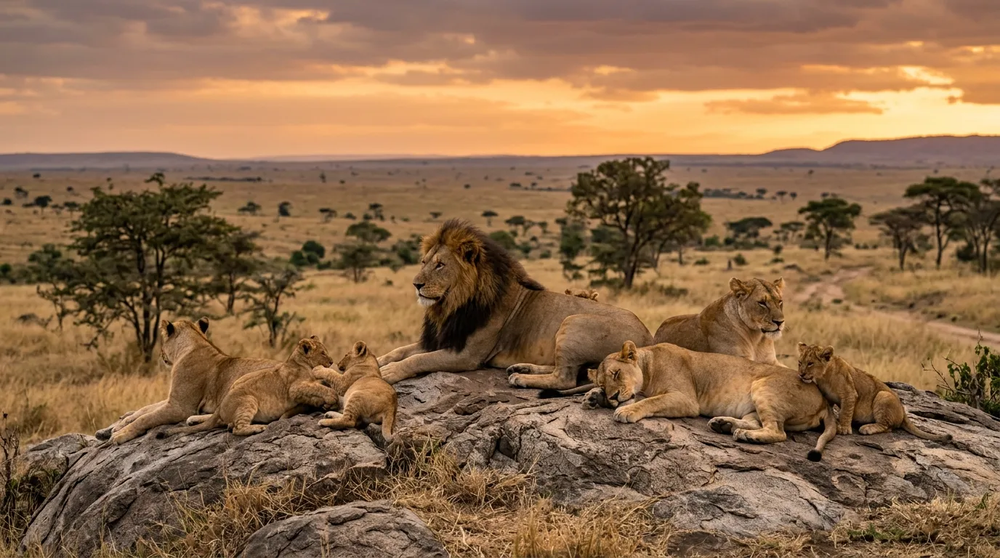

Born blind and helpless, lion cubs rely entirely on their mother for warmth, food, and protection. Their eyes begin to open around 10 days.

Cubs start to crawl and then walk. They begin suckling frequently and stay hidden in dense vegetation to avoid predators.

Cubs start playing, socializing, and eating meat alongside their mother’s milk. They become more mobile and follow the pride. Cubs develop hunting skills by watching and practicing with adults. Males start showing early signs of mane growth.

Males are often forced to leave the pride, while females stay. Young lions may form small coalitions or live nomadically.

Lions reach full maturity, with males growing full manes and competing for dominance, while females start breeding and raising their own cubs.
